This helps us define a preset pattern for our webpages, which we can dynamically modify.
We can use EJS for this! (Embedded JavaScript)
It works like a string template literal ${}, but we can use HTML too!
This add logic and dynamism to our code.
It uses JS syntax, so we won't have to learn any new language.
We can fill in the blanks easily and effortlessly.
We must configure EJS to let Express know that it will be the engine we will be using for templating.
We do this with a method called set: request.set()
It takes 2 arguments, the jey/property and the value.
We also need to install ejs if we have not done so already globally.
We will now have a folder called ejs inside our node_modules folder.
We must include our templates in a folder called views, since it is the default name that EJS will check when looking for said templates. (IT CAN BE CHANGED)
Inside it we will create a home.ejs file.
Now we can use response.render() inside any of our routes, this method will use our template, rendering a view to the webpage. We pass in home.ejs when executing it. (response.render("home.ejs"))
(We don't need .ejs for the render method as long as we set() the view engine to ejs.)
Any contents from our template will now be displayed when the user accesses the path where we used .render()
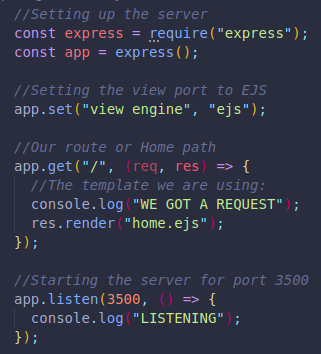If we are not inside the folder where our views folder is, EJS will not have access to it, even if we successfully run our server by specifying the relative path with nodemon /aFolder/index.js.
The server will run, but EJS won't find the Views directory because it will look wherever we currently are in the terminal.
To run the code from anywhere, we can change the views directory.
We will need a built in module for this which will in few words splice and join the current directory we are in, whichever it may be, and join it with the /views folder.
This will basically change the location where EJS will look for views, we are replacing the default with where our views folder is instead.
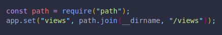(The double underscore takes our path and uses it when putting the string together.)
NOW WE CAN RUN OUR SERVER BY SPECIFYING THE PATH OF OUR index.js FILE FROM WHATEVER LOCATION WE ARE AT IN THE TERMINAL, AND EJS WILL STILL FIND THE VIEWS DIRECTORY!!!
This is frequently seen in Express JS applications.
EJS has special syntax for JavaScript, it works a lot like string template literals do.
If we use the EJS special tags, EJS will replace the content inside them and create HTML according to the type of tag.
We can use methods on strings, math operations, basically anything we can do in a JS file, as long as it is inside the corresponding EJS tags.
It must also be a .ejs file to work.
We regularly try to remove as much logic as possible from our templates.
We should generate our content first and pass it to our template instead of doing the JavaScript inside EJS tags of our EJS file.
Here are both versions:
AVOID:
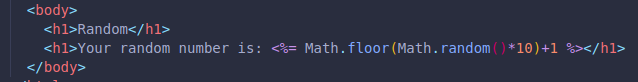BEST PRACTICE:
(It would still work if both the key and value had the same name)
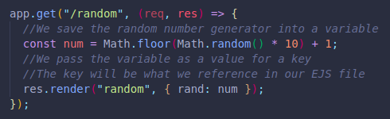 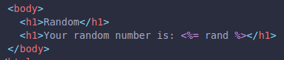Both would work, but it you can see the difference when dealing with a lot of logic inside the ejs file.
This would replace all the EJS tags with the user's search:
i.e In /r/whales, we would reuse the value "whales".
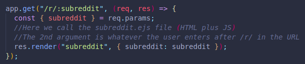 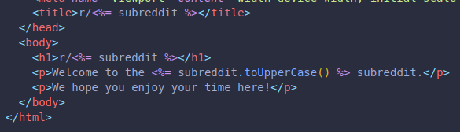We can also have JS code run depending on what we want.
Here is an example with an if else conditional. We use <% %> instead of <%= %> here, since we are not embedding a value, but running literal JS syntax code.
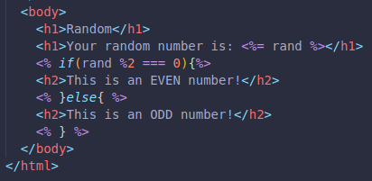So only the code inside our curly brackets would run/render if the conditional is true!
These tags help us control the flow of our syntax, instead of referencing a computed value and always running the code.
We can make a sketch at the end of our file and move it to the body when we have all our ejs and HTML tags in order.
Here is another way to do the same thing:
Here we use <%= %> instead of using JS Syntax, so the value is embedded.
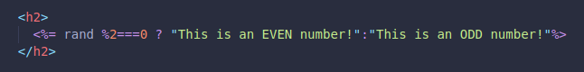We can also loop any data from our database to display it accordingly in our EJS files.
Here is an example where we define the array directly in our JavaScript file, but it could also be coming from a database:
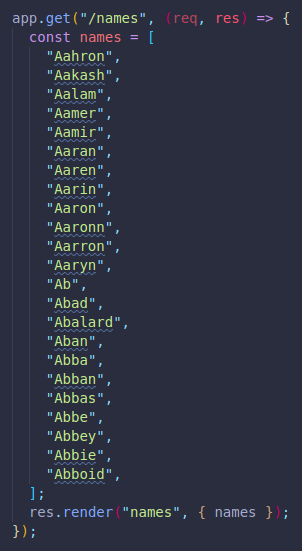This webpage will show an unordered list with each name from our names array in a list item!
(We used <%= %> because we are using an embedded value)
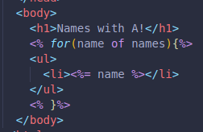